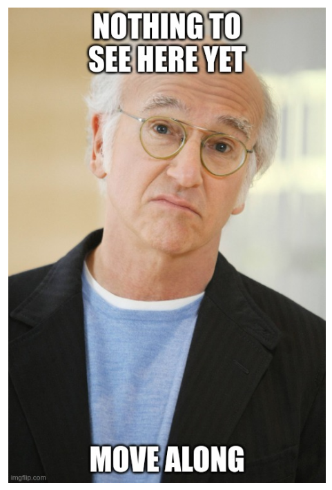

x = rnorm(100)
plot(x, type = "l", xlab = "time", main = "time series plot")
The old fashioned way of writing a report with statistical results follow the steps:
Write R code to produce statistical results and plots.
Write the report in Word, copy the numbers from R to make tables and insert the plots as figures.
Write mathematical formulas using some add-on in Word.
This is not very efficient, particularly when you have to re-run the code to update the results. The tables then needs to be updated manually in Word, and the insertion of figures must be done all over again. Would it be nice if we could write everything in a document: the text, the code, the mathematical formulas, the figures and tables? Can we even ask for a way to automatically update the whole report by a simple click of a button? Say hello to Quarto, a system that does just that, all from inside the comfort of RStudio! ü§©
Quarto is a way to integrate text (markdown), computer code, figures, tables and mathematical formulas in one document.
Quarto documents (with file ending .qmd) can easily be turned into pdf format, html, website, blogs and presentations.
At the top of a quarto document is the so called YAML, which tells the Quarto engine how the document should be formatted. This is the YAML for this document:

which basically only gives the title and author information, everything else is using default settings. This will print (render) the document to html by default. To view the rendered file, just click the Render button at the top of the editor (only shown when you have a Quarto file in the editor):

The produced html file can be view in your web browser or inside RStudio in the Viewer tab in the bottom right window (typically). You may need to change the settings for it to show up in the Viewer tab. Click the settings-wheel at the top of the editor and make sure that Preview in Viewer Pane is selected:
If I instead wanted to render to pdf I would use the YAML:

The text written in a Quarto document can be formatted using the markdown language. Markdown is a very simple language for formatting text. For example, I can easily make the text bold by writing **bold** or italic using a single * on each side of the text. A bulleted list:
bullet
list
are also
easy
is produced by putting a dash - and space before each bullet point. Numbered lists are also simple, just place numbers and a dot (.) before each list item. Like this:
Images can be inserted by typing {width="100"} which would give the picture below. So the text caption for the image is written between the brackets [] and the search path to the image on your computer is given inside the parentheses ().

You can leave out the figure text and the width argument and just write:  .
Tables are also pretty easy. The table below is made by writing
| Name | Age | Position |
|-------|-----|---------------------|
| Mike | 49 | Professor |
| Sarah | 37 | Assistant professor |
| Anne | 26 | PhD student |
| Name | Age | Position |
|---|---|---|
| Mike | 49 | Professor |
| Sarah | 37 | Assistant professor |
| Anne | 26 | PhD student |
What if you want the table caption text to be below the tables, not below it? No sweat, just put table-cap-location: bottom in your YAML at the top of the document.
A Quarto document can have executable code in them. It supports several programming languages, most notably: R, Python and Julia. You just need to add a code chunk. A code chunk starts and ends with three so called backticks `. The backtick is typed by Shift and the key to the left of Backspace on a Swedish keyboard. This is a chunk of R code:

Note the little green Play-button. By pressing that we can run the code chunk. After running the code in the Quarto-document, the variables (in this case a vector x) will be available in the console, just like for any R code. Here is the end result of that code chunk:
x = rnorm(100)
plot(x, type = "l", xlab = "time", main = "time series plot")
Quarto supports other popular programming languages in addtion to  .
.
A chunk of Python  code would start with
code would start with ```{python}.
A Julia  code chunk starts with
code chunk starts with ```{julia}. 
What if I want to use the code to produce the plot, but not show the code in my report? Easy, I would just add some YAML information at the beginning of the code chunk itself. YAML inside of a code chunk must begin with the two characters #| . Here is how you hide the code:

The first character # is called a hash and the second | a pipe. So the recommended way to remember #| is by thinking of the Weezer song: hash pipe. BTW, there I used a hyperlink which you write as [link text](webpage address) where the webpage address is a http-link, but can also be links within a document.
Quarto supports LaTeX, which is a professional typesetting system for mathematical symbols. LaTeX takes a while to master, but you can look it up online to learn the basics. Just enclose LaTeX code between two dollar-signs on each side. Here is a simple example $$\alpha_1$$ which would come out as \[\alpha_1\] in your document. Here is a more complex example:
$$\bar{x} = \frac{1}{n}\sum_{i=1}^n x_i$$
which would come out as the formula for the sample mean:
\[\bar{x} = \frac{1}{n}\sum_{i=1}^n x_i\]
You can create (File/New File/Quarto document… menu) and write Quarto documents in RStudio. When you open a Quarto document in the editor the menu bar changes to (may look different for you):
Clicking on the Render button will render the document to html (default) or pdf (if you choose that in the YAML). Pressing the Run button will re-run all the code chunks in the document. You can write your Quarto document as markdown code if you click the Source -button in the extreme left. If you press the Visual-button you will see the document in a similar way to word processors like Word. You can then insert images and table, change font sizes etc by clicking on the menu. I tend to spend most time in Visual mode, but will often go over to Source mode when I want absolute control of what I do.
Quarto processes the document code chunk by code chunk, from the beginning of the document until the end. Within a code chunk, Quarto reads the codez line by line. You must therefore make sure that a variable that you use has been defined (assigned a value) before you use the variable in the code. A common mistake is to use a variable in a code chunk which is only defined in a later code chunk. That will give an error.
Quarto documents have the basic interactivity that one can change code inside a code chunk, render the document and everything in the document changes according to the changes in the code.
But it also possible to make the final html interactive. Below is an an example to wet your appetite. Note however that you need to view the html file in an external web browser and not using the Viewer inside RStudio. Try moving around the slides to change the plot.